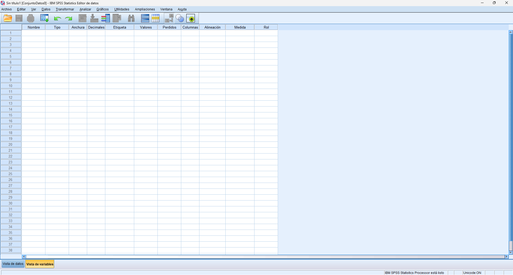
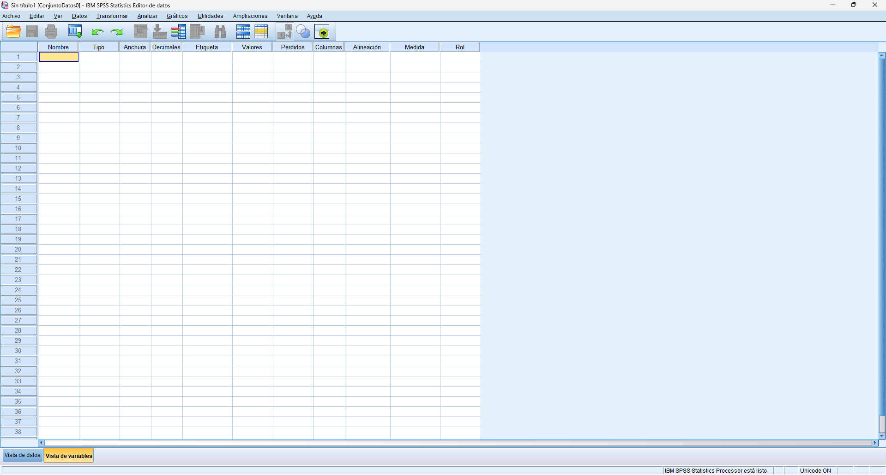
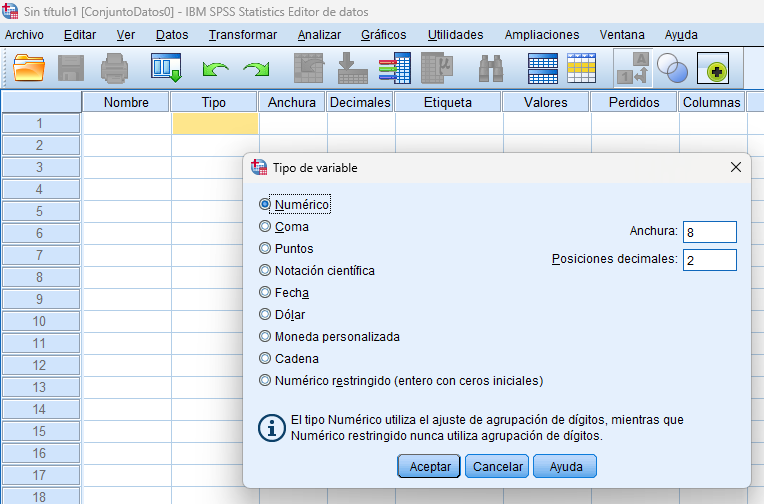
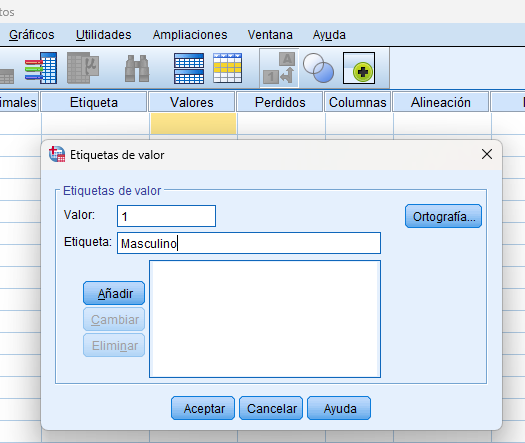
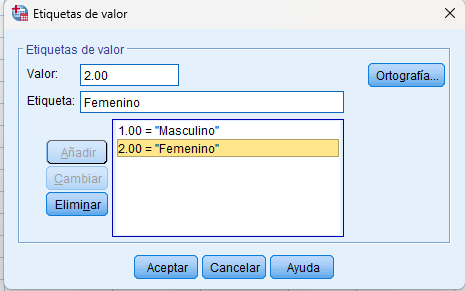
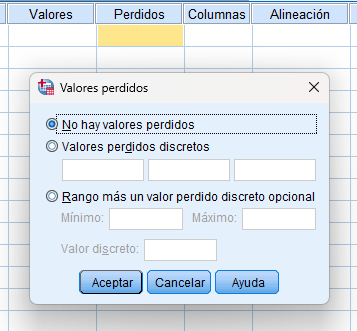

Una base de datos en SPSS es el conjunto de información que se utiliza para realizar análisis. Está formada por variables (columnas) y registros (filas). Antes de ingresar datos, es importante preparar correctamente la base, ya que esto evita errores y facilita los análisis posteriores. Antes de capturar información, se debe trabajar en la vista de variables, donde se configuran las características de cada variable.
1. En la columna “Nombre”, escribe el nombre de la variable.
a. Debe ser corto
b. Sin espacios
c. Sin acentos o símbolos
d. Cada nombre debe ser único
e. Longitud máxima de hasta
f. SPSS no distingue entre mayúsculas y minúsculas para el nombre de la variable (ej. "Edad" y "edad" se tratan como iguales), aunque sí lo hace para los valores si se define como cadena.
g. No puede iniciar con un número.
2. En la columna Tipo, selecciona el tipo de dato (generalmente numérico). Aunque se ofrece la posibilidad de asignar una característica a la variable, de manera que ésta sea más fácil de


trabajar y de forma que el software la interprete de manera correcta.
3. Anchura: Define el número máximo de caracteres que puede tener una variable. En variables numéricas, indica cuántos dígitos se pueden
ingresar.
a. Ejemplo:
i. Si colocas anchura = 5, puedes
ingresar valores como 12345
ii. Si el número es mayor, SPSS puede
marcar error o ajustarlo
4. Decimales: Indica la cantidad de números después del punto decimal. Se utiliza principalmente en variables numéricas.
a. Ejemplo:
i. 0 decimales → valores enteros (edad, número de personas).
ii. 2 decimales → valores con precisión (salario, promedio)
5. En Etiqueta, escribe una descripción más completa de la variable.
6. En Valores, asigna etiquetas a las respuestas (ejemplo: 1 = Masculino, 2 = Femenino).
a. Cuando tengas establecido el valor que vas a poner, le haces clic a la opción “Añadir”.
b. Si ya tenías valores agregados y quieres eliminar uno, haces clic en el que deseas eliminar hasta que se resalte de color amarillo, y de lado izquierdo hacer clic en la opción “Eliminar”.



7. Perdidos: Permite definir valores que se considerarán como datos faltantes.
a. Opción: No hay valores perdidos
i. Se utiliza cuando todos los datos son válidos y no hay respuestas faltantes.
b. Valores perdidos discretos
i. Permite asignar hasta tres valores específicos como datos faltantes.
ii. Ejemplo:
1. 99 = No respondió
2. 98 = No sabe
c. Rango más un valor perdido discreto opcional
i. Permite definir un intervalo de valores como perdidos (mínimo y máximo), y además agregar un valor adicional.
ii. Ejemplo:
1. 90 a 99 = datos inválidos
2. 0 = No aplica
d. Una vez configurados, SPSS excluye automáticamente estos valores de los análisis, evitando que afecten los resultados.
8. Columnas: Define el ancho visual de la columna en la vista de datos. Solo afecta la apariencia, no el análisis.
9. Alineación: Permite ajustar cómo se muestran los datos en la celda: izquierda, centro o derecha. Es solo visual.

10. En Medida, selecciona el tipo de variable:
a. Nominal: categorías sin orden (sexo)
b. Ordinal: categorías con orden (nivel de acuerdo)
11. Rol: Define la función de la variable en análisis avanzados. En nivel básico, se recomienda dejarlo como “Ninguno”.
12. Entrada: La variable se utiliza como dato de entrada para realizar análisis. Es la más común.
13. Objetivo: Es la variable que se desea explicar o predecir.
a. Ejemplo: nivel de satisfacción o intención de compra.
14. Ambos: La variable puede funcionar tanto como entrada como objetivo dentro del análisis.
15. Ninguno: No se asigna ningún rol específico. Es la opción más utilizada en nivel básico.
16. Partición: Se utiliza para dividir los datos en grupos, por ejemplo, para entrenar y validar modelos.
17. Dividir: Permite separar los datos en diferentes subconjuntos para analizarlos por separado.